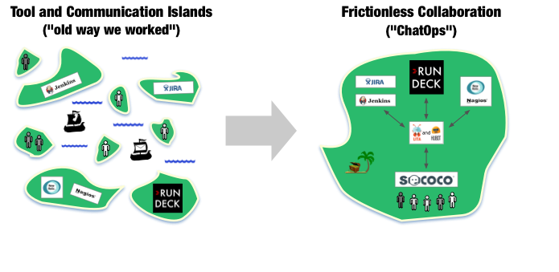
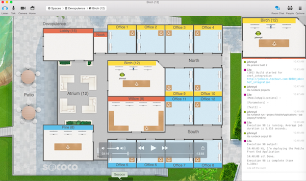
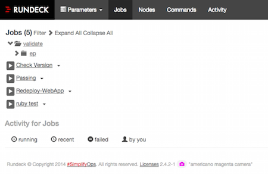
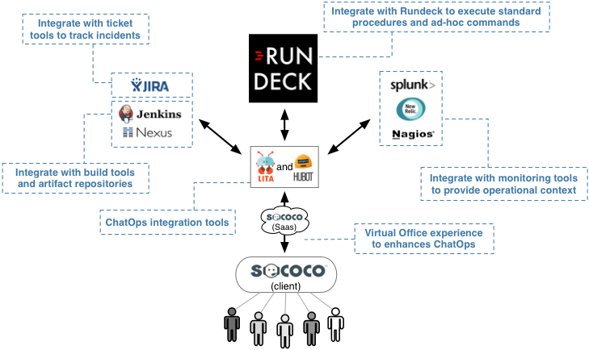

|
Devopulence is a New York based, specialist consulting firm that builds Cloud Management, Configuration Management, and Operations-as-a-Service solutions for financial services companies moving to the public or private Cloud. Devopulence specialty is helping clients get the most out of an existing or upcoming Cloud infrastructure investment.
“Our clients have realized that new tools aren’t enough -- success in the Cloud requires you to rethink how you approach your operations. We look for tools that make it easier to adopt this new way of thinking.”
-John D’Esposito (Chief Architect at Devopulence)
A popular Devopulence area of focus is improving collaboration and smoothing handoffs between both individuals and teams. Devopulence features in both Rundeck and Sococo in a solution that is patterned after an idea called “ChatOps”.

ChatOps was born from the realization that frictionless collaboration and shared context are two of the keys to successful, high-velocity operations. The ultimate form of frictionless collaboration and shared context? Have everyone work in same room looking at the same screen. Unfortunately, in the real world, that is rarely possible.
Enter the idea of ChatOps, a term first popularized at Github. How to ease collaboration? Use a persistent chat room to remove the barriers to communication (e.g. avoid email congestion, missed phone calls, ticket queues, etc.). Shared context? Have all of your operational tools push key information to that same chat room (e.g. alerts, metrics, automation tool output, etc.). In short, keep everyone focused on the same channel and give them what they need to do their work without leaving. If implemented correctly, this ChatOps way of working drives both a reduction in delivery lead times and an increase in organizational responsiveness
Early in the development of their ChatOps inspired solution, Devopulence, lead by chief architect John D’Esposito, realized that their clients needed a richer experience than a chat service alone could provide. This lead them to leverage Sococo’s virtual office solution.
Sococo encompasses persistent chat rooms into live meeting spaces that offer always-on voice and video communication. When a question demands the immediate attention and real-time, multi-party conversation that only a live meeting can deliver, teams can gather in a Sococo space dedicated to that conversation, where they share the relevant chat stream and tools. Team members working in their Sococo virtual offices can see the availability of all their colleagues and invite them to join a group meeting with just one click. The result is zero-friction communication with shared context for both information and people.
“Sococo helped us eliminate the chase. The waiting and communication gaps went away.”

Concurrent to their Sococo use, Devopulence was already introducing Rundeck into their customers environments. Devopulence’s first use of Rundeck was to allow teams to define and share standard operating procedures.
“Rundeck is an essential tool for getting your operations under control -- and then safely putting that control into the hands of those who need it.”
Across development, QA, or production environments, Rundeck’s access control and logging features allows companies to safely delegate operational actions to any internal user who need to act on those systems. In this capacity, Rundeck was being used by Devopulence’s customers for the full range of operational activity, from code deployment to ongoing administration (e.g. restarts, get status, troubleshooting, etc.)

John and the Devopulence team soon realized that exciting benefits could be had by aligning their existing Sococo and Rundeck based solutions. Sococo would provide the virtual, real-time workspaces with persistent chat and Rundeck would enable users to take action and execute commands without leaving the new ChatOps style experience. Combining the ability to share context, collaborate instantly, and take action represented an opportunity to take a tremendous amount of friction out of an organization. And the best part? It was just a matter of integrating tools that were already in use.

Hubot and Lita are chatbots that reside within a chat room , listen for instructions and execute them accordingly. Hubot is written in JavaScript and Lita is written in Ruby. The chatbots act as intermediaries, that integrate human interactions with loosely coupled remote systems and services. They enable humans to execute tasks on systems and services, receive alerts and status from those same systems and services without the end user ever leaving the chat room.
One chatbot per chatroom is a typical design pattern.The chatbot integrates with multiple systems through open source APIs and provides easy extensibility for custom development. Typical interactions include the following:
John giving a demo and explaining integration of Rundeck, Sococo, and Lita.
“When the clock is ticking, Rundeck and Sococo cuts the amount time it takes to get people together, get them focused on the right information, and then take corrective action.”
Incident response was one of the natural ChatOps inspired use cases put into place by the Devopsulence team. They found that the ChatOps implementation leveraging Rundeck and Sococo lets teams stay immersed in the details but still quickly collaborate and take action.
When an incident is identified, a virtual room is created in Sococo and named with ticket ID and description. Integrations with monitoring and ticket tools (through tools like Hubot or Lita) help build the shared context around the incident. As needed, subject matter experts can quickly join a virtual room to provide requested assistance. Leveraging the Rundeck integration, users can execute common actions like restarts, get a status, executing automated tests, or exploratory ad-hoc commands without leaving the context of the virtual room.
“In addition to obvious benefits of decreasing MTTR, I’ve seen the ChatOps way of working automatically build levels of collaboration and communication that clients didn’t know was possible”